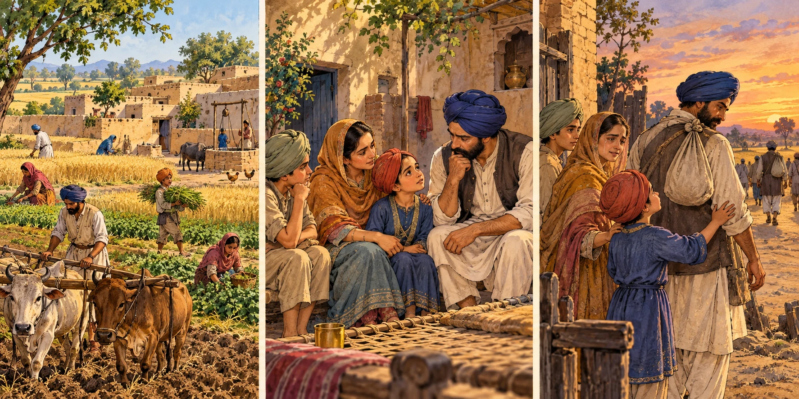

Explore the evidence behind this chapter
Institutional sources checked for the claims noted below. Historical interpretation and illustrations still await community review.
Come closer, beta. From Punjab to places across the world, discover how people worked, stood together, and made a home.
A journey in the making
These are chapter plans, not completed history chapters. Sources and community review will guide the stories before a stamp can be earned.
Read the Pacific Northwest story →Grandfather’s corner
“Aa gaye oye! Come closer, beta. Let's open our storybook.”
Grandfather is our fictional guide. His words are storytelling, not eyewitness memories.
Institutional sources checked for the claims noted below. Historical interpretation and illustrations still await community review.
Try it together · Optional
A little reflection
Your journeys, remembered
Mark each chapter finished after reading. Complete all five to collect your Pacific Northwest stamp.
Your progress stays in this browser. No account needed.
Clear the five completion marks and quiz answers? Your reading mode will stay the same.
A warm, grandfather-style narration is planned. We'll add play, pause, replay and a transcript when a Punjabi speaker has reviewed the recording.